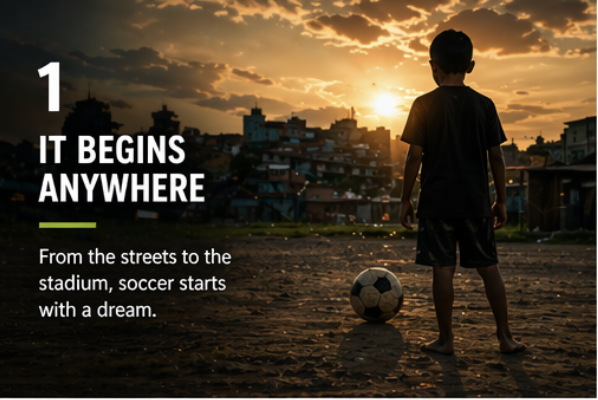
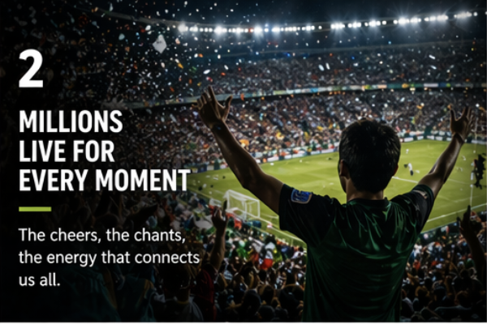
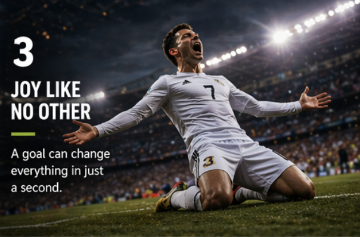
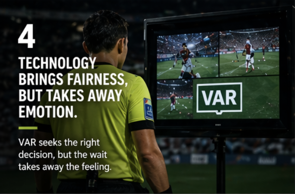
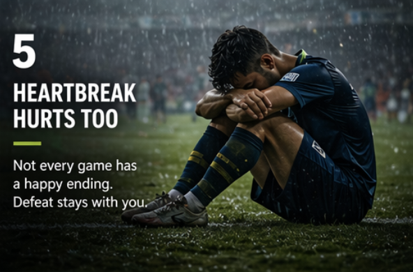
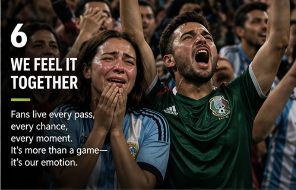
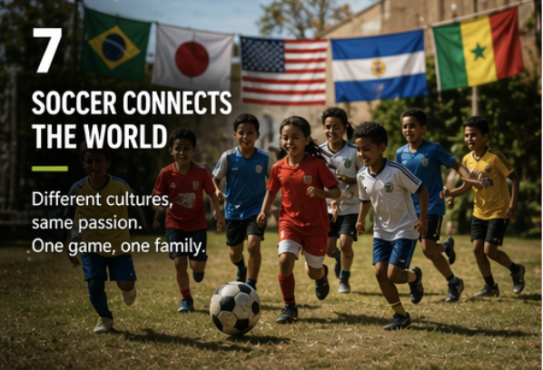

It Starts Anywhere
For many people, soccer begins with imagination, friendship, and a simple ball.
Soccer is not only about rules, goals, and trophies. It is about emotion, identity, memory, and the way one sport can unite millions of people across the world.
Scroll to ExploreSoccer does not need a perfect field or an expensive stadium. It can begin in the street, in a schoolyard, or in any open space where people bring their passion.

For many people, soccer begins with imagination, friendship, and a simple ball.

From local matches to world tournaments, soccer creates collective energy and excitement.

One goal can create a memory that players and fans remember for years.

Modern soccer is also shaped by technology. The Video Assistant Referee, or VAR, helps referees review important decisions such as goals, penalties, and red cards.
While VAR can improve fairness and reduce mistakes, it also interrupts the flow of the game. A beautiful moment of celebration can suddenly become a pause filled with uncertainty.
This tension reveals something important: soccer is not only about being correct. It is also about feeling.
Every match carries two opposite emotions at once: the thrill of victory and the pain of defeat.

Defeat in soccer can feel deeply personal because players and fans invest so much emotion.

Supporters do not just watch the game. They live every second of it with intense emotion.

Soccer connects people across cultures, countries, and generations through a shared experience.
"Soccer is not just played - it is felt."